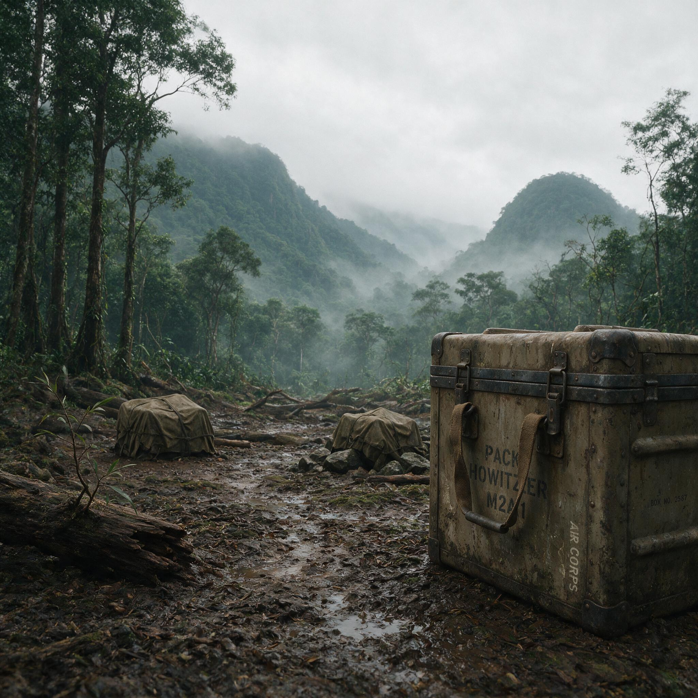

第 15 章
胡康河谷：反攻的逻辑
枪在背上，路在脚下。新三十八师一一二团士兵李国栋翻过那加山脉最后一个隘口时，看见的不再是印度的干热河谷，而是缅北丛林蒸腾起来的雾障。那是1943年10月下旬，旱季刚刚开始，季风雨留下的泥泞还在山道上发酵。他的绑腿湿透了，胶鞋里灌满泥浆，但背囊里的东西是干的——两条备用绑腿、三天的干粮、六十发子弹、两枚手榴弹，还有美国人发的防蚊油和维生素片。在兰姆伽的几个月里，每天四千卡路里的伙食把他的体重从一百零几斤拉到了一百三十斤。过去在国内行军时背不动的重量，现在扛着不算什么。
连队在山脊上停下来做最后一次休整。李国栋卸下背囊，掏出水壶。铝壶是美式的，壶嘴套着帆布套。壶底刻着一行他认不全的字母，兰姆伽有人告诉他那是芝加哥一家工厂的缩写。芝加哥在哪里，他不知

兰姆伽训练营美军装备箱
AI 生成插图，非史实影像。
道。他只知道这壶水要支撑他走完进入胡康河谷的最后一段路。
山下就是胡康河谷。地图上，那是一块被亲敦江上游支流切割成网状的盆地，东西宽不过几十公里，南北纵深不到两百公里。但地图是骗人的。
胡康河谷没有路，只有大象踩出来的小径和伐木便道。河谷里长满柚木、竹丛和比人还高的象草。旱季的丛林是灰绿色的，从高处看下去像一块发了霉的绒布。绒布下面藏着什么，没人知道。
李国栋把水壶塞回背囊，重新背上枪。那是一支M1卡宾枪，比他在国内用过的中正式短了半截，轻了将近两斤。在兰姆伽的靶场上，他用这枪打过两百多发子弹，命中率比中正式高了三成。不是因为枪好——当然枪确实好——而是因为子弹管够。在国内，一个步兵每场战斗前能领到三四十发子弹就算不错了。在兰姆伽，美国人让他们打到手酸为止。枪好，子弹多，肚子饱。这大概就是他们和两年前不一样的地方。
但不一样的不止这些。连长在出发前告诉他们，这次打仗，天上会有美国飞机先炸一遍，地上有坦克开路，后面还有美国工兵在修路。公路修到哪里，补给就送到哪里。连长说这话时，语气里有一种李国栋从没听过的笃定。两年前在野人山，连长也说过类似的话——他说杜军长说了，翻过山就有接应，到了印度就有吃喝。
结果山翻了三座，接应没来，吃喝没有，人死了一半。这一次，连长的话能信吗？他最后看了一眼身后的山道。一一二团的队伍从山脊一直延伸到云雾里，每个人都在走，没人说话。北面就是胡康河谷，就是他们要打回去的地方。## 一
胡康河谷战役的起点，比重庆方面预定的时间提前了将近三个月。1943年10月19日，蒋介石在重庆召集蒙巴顿、史迪威、索默维尔（美空军补给司令）以及何应钦、商震、刘斐、林蔚等人开会，商讨反攻缅甸的作战方略。会议确定驻印军于1944年1月15日从列多发动攻击，目标是推进至北纬二十三度一线，保障列多公路的安全。这是一个谨慎的时间表，留出了充分的准备期。
史迪威不想等。在史迪威的时间表里，胡康河谷不是终点，而是起点。他的目标是密支那。密支那往东，是通往中国的旧滇缅路；往下，是日军在缅北的最后据点八莫和南坎。拿下密支那，列多公路就能与旧滇缅路接上，通往中国的陆上运输线即可恢复。在史迪威的构想中，这条公路的重要性不亚于任何一场战役的胜负——公路是血管，没有血管，再强的肌肉也会坏死。
重庆方面不这么看。蒋介石的算盘打得更细。驻印军是他手里最好的一支机动力量，装备精良、训练充足。把这支部队投进缅北丛林和日军精锐第十八师团硬碰硬，打赢了固然好，打残了呢？
国内战场上压力日增，日军在豫湘桂的攻势随时可能发动，他需要留一支能打的部队在手里。更重要的是，他对史迪威统揽驻印军指挥权这件事始终心存戒备。一个美国将军指挥中国军队，打赢了功劳算谁的，打输了代价算谁的？两种逻辑在重庆的会议室里碰撞，最后达成的妥协是：驻印军可以先在胡康河谷发动有限攻势，但主攻时间必须等到一月，作战范围以保障列多公路安全为限。
史迪威接受了这个时间表——至少纸面上接受了。但到了十月底，新三十八师一一二团已经越过那加山脉，进入胡康河谷北缘。这不算抗命，而是史迪威对“有限攻势”的解释比重庆宽泛得多。在他看来，要保障列多公路安全，就必须把日军赶出胡康河谷；要赶出胡康河谷，就必须占领河谷北端的据点；要占领据点，就必须派部队进入河谷侦察、试探、建立前进基地。一连串“必须”串下来，“有限攻势”就变成了实际上的全面进攻。
新三十八师师长李鸿对此心知肚明。他出发前给各团下达的命令里用了一句含糊但意味深长的话：“相机推进，遇敌即歼。”什么叫“相机推进”？推进到哪里为止？什么叫“遇敌即歼”？敌人不主动来犯，要不要主动去找？命令里都没说。李鸿把解释权交给了自己。
一一二团进入胡康河谷后的第一个目标是于邦。于邦是胡康河谷北端的一个小村落，坐落在亲敦江一条支流边上。村子本身没什么战略价值，但它控制着从北面进入河谷的唯一一条象道。日军第十八师团在这里驻了一个中队，约两百人，构筑了环形防御工事。按日军惯例，这些工事不会太复杂——碉堡用圆木和沙袋搭建，战壕挖到齐胸深，外围布设雷区和铁丝网。在丛林里，这样的工事足以抵挡轻步兵进攻。但一一二团不是轻步兵。
十一月一日清晨，一一二团在于邦外围完成展开。李国栋所在的连队部署在村子西侧，任务是切断日军向西撤退的路线。天还没亮，他们就在象草里趴好了。李国栋把卡宾枪架在一棵倒下的柚木上，枪口对准前方不到一百米的一条小径。太阳升起后大约一个小时，飞机的引擎声从南面传来。
六架P-40战斗轰炸机排成两列纵队，从山脊线上俯冲下来，机翼下的炸弹落进于邦，炸起黑色的烟柱。六架飞机轮番俯冲了三个来回，把携带的炸弹全部投进了村子。爆炸声停下后，炮击接着开始。一〇五毫米榴弹炮的炮弹从后方飞来，持续了二十分钟，打了将近两百发。李国栋趴在柚木后面，能感觉到地面在震动。震动顺着树干传到他手臂上，又传到肩膀上。
两年前在野人山，他害怕过——怕饿、怕病、怕掉队、怕被日本人追上。现在他不怕了。不是因为勇敢，而是因为那些炸弹和炮弹不是朝他飞的。
冲锋号响了。李国栋从柚木后面爬起来，端着卡宾枪往前跑。他跑过象草丛，跑过被炸倒的竹林，进了村子西侧。一个日本兵从废墟里钻出来，端着步枪朝他冲过来。李国栋几乎是本能地扣动扳机。卡宾枪后坐力很轻，枪口只跳了一下。那个日本兵倒下去，离他不到三十米。
这是李国栋在胡康河谷打死的第一个敌人。他看了一眼尸体。日本兵穿着土黄色军装，脚上是一双分趾胶鞋。
步枪掉在一边，枪托上刻着几个汉字——那是在中国战场上缴获的。这个人也许在中国杀过中国人，现在死在一个他从未听说过的地方，被一个他从未见过的中国士兵用一支美国枪打死了。班长从后面追上来，拍了拍他的肩膀：“别停，往前压。”
东侧的战斗已经结束。一一二团主力从北面和东面同时攻入村子，日军中队在轰炸和炮击中伤亡过半，剩下的在巷战中被分割歼灭。整个战斗从飞机投弹到肃清残敌，用了不到三个小时。于邦拿下来了。代价是轻伤七人，重伤两人，阵亡一人。日军方面，中队几乎全灭，只有十几个人逃进丛林。这些数字被写进战报，通过电台发回列多指挥部。史迪威看到战报时，在日记里写了一句话：“中国兵证明了自己。”
但这句话背后还有另一句他没写：中国兵证明了自己，前提是他们得到了足够的炸弹、炮弹和子弹。## 二
于邦之战暴露了日军第十八师团此前不愿承认的事实：他们在丛林防御战中赖以成名的战术，正在失效。
第十八师团不是普通部队。这支部队在中国战场上打过南京、武汉、广州，在马来亚以少胜多击溃英军，在新加坡迫使十万英联邦军队投降。1942年入缅后，他们在同古击退了中国远征军主力，在野人山追击过溃退的中国部队。他们的丛林作战经验在日军中首屈一指，士兵擅长渗透、伏击和据点死守。面对缺乏重火力和空中支援的对手，这些战术几乎无往不利。
但在胡康河谷，这些战术遇到了一个前所未有的问题：对手的火力和机动远超预想。日军《战史丛书·缅甸作战》对胡康河谷战役的记述，留下一段措辞克制但含义清晰的评价：“敌之火力和机动远超预想。其步兵在航空机与炮兵之支援下，以战车为先导，逐次蚕食我阵地。我部虽依托坚固据点顽强抵抗，然在绝对火力差之前，伤亡惨重，防线逐次后退。”
“绝对火力差”——这四个字是日军自己写的。这个火力差究竟有多大？以于邦之战为例，一一二团投入兵力约一千二百人，得到六架战斗轰炸机和十二门一〇五毫米榴弹炮的支援。日军一个中队约两百人，没有空中支援，没有重炮。火力密度的对比不是几倍，而是几十倍。
但这只是表象。更深层的问题在于，日军的整个防御体系是为另一种战争设计的。在太平洋岛屿上，他们用地下坑道和混凝土工事对抗美军舰炮和航空炸弹；在缅北丛林里，他们只有圆木和沙袋。不是不想修更坚固的工事，而是修不了——胡康河谷没有混凝土，没有钢筋，连石头都不多。圆木工事挡得住步枪和机枪，挡不住一〇五毫米榴弹炮的直接命中。
更要命的是，日军的后勤体系支撑不了这种高强度的防御战。第十八师团在胡康河谷的补给线，是一条从密支那经孟关、太柏卡到前沿的简易公路。旱季勉强可通卡车，雨季只能靠骡马和人力。从密支那到于邦，直线距离不到一百公里，公路在丛林里绕来绕去，实际里程超过两百公里。
卡车跑一趟要两天，途中随时可能遭到空袭。美军的战斗轰炸机专门盯着这条公路打。卡车被炸毁，补给就断了；补给断了，前沿据点就撑不住；据点撑不住，防线就得后撤。这是一个恶性循环。日军越后退，补给线越长；补给线越长，越容易被空袭切断。
第十八师团师团长田中新一在战后承认，胡康河谷战役从一开始就不是对等的战斗。勇敢无法弥补火力差距。但田中新一没有说的是——或者说不愿承认的是——日军的困境不仅在于火力差距，还在于他们面对的中国士兵已经不是两年前那支溃退的部队了。
于邦之后，一一二团继续向南推进。下一个目标是太柏卡。太柏卡比于邦大，是胡康河谷中部的重要据点。日军在这里驻了一个大队，约八百人，工事更加完备。更重要的是，村子建在一块高地上，四周是开阔的稻田。旱季稻田干涸，变成天然射界。进攻方要接近村子，必须通过这片毫无遮蔽的开阔地。一一二团在于邦打的是奇袭，在太柏卡打的是攻坚。十一月十一日，一一二团在太柏卡外围完成部署。
他们没有急于进攻，先用炮火和空袭对日军阵地进行持续打击。炮击持续了两天，打掉大部分暴露的火力点。十一月十三日清晨，步兵开始推进。
这次，坦克开在前面。美军提供的M3轻型坦克在稻田里碾出一条条履带印，步兵跟在车后利用车体作掩护。日军的机枪子弹打在坦克装甲上溅起火星，穿不透。步兵从坦克两侧探出身子射击，坦克的三十七毫米炮对准碉堡射孔开火。
李国栋跟在第三辆坦克后面。他看见炮塔转动了一下，对准前方一个圆木碉堡。炮口喷出一团火焰，碉堡的射孔炸开一个大洞，里面的机枪停了。“上！”班长喊。李国栋从坦克后面冲出去，跑到碉堡侧面，从射孔里往里看了一眼。里面躺着三个日本兵，都被炮弹炸死了。其中一个还握着机枪握把，手指僵硬地扣在扳机上。他移开目光，继续往前。
太柏卡在当天下午被攻占。日军大队长以下三百余人阵亡，两百余人负伤，残余逃进东面丛林。一一二团阵亡二十余人，负伤五十余人。战后清点战场时，李国栋在日军指挥部废墟里发现一份文件。
日文他看不懂，但上面画着一张地图，标注了胡康河谷各个据点，用红笔圈出太柏卡、孟关和瓦鲁班。在太柏卡旁边，有人用铅笔写了一行小字。后来文件送到师部，翻译出来，李鸿沉默了很久。那行字写的是：“补给断绝，弹药将尽，然敌之攻势未见减弱。我部将在此地战至最后一人。”
决心改变不了火力差，改变不了补给被切断的现实，也改变不了中国士兵在充足后勤支撑下展现出的攻击力。那个日军指挥官大概至死都没想明白，为什么两年前还在野人山里饿死、病死的中国军队，现在能推着坦克、顶着飞机大炮，把他的阵地一个接一个碾碎。答案简单到残酷：因为这一次，他们背后有一条公路。## 三
列多公路的推进速度，决定了胡康河谷战役的节奏。这条路从印度阿萨姆邦的列多镇出发，向东穿越那加山脉，进入缅北丛林，最终目标是和旧滇缅路接上。负责修路的是美国工兵部队，主力是黑人工程兵营。他们在丛林里开路、架桥、铺设路面，跟在作战部队后面，用推土机和炸药把象道变成公路。
修路的逻辑和作战的逻辑同步。步兵往前推，公路就往前修；公路修到哪里，卡车就把补给送到哪里；补给送到哪里，步兵就能继续往前推。这是一个闭环，每一环都必须扣紧。
但修路的速度比作战慢得多。于邦打下来时，公路只修到那加山脉南麓，距离于邦还有将近五十公里。这五十公里全是丛林，中间要穿过两条河和一片沼泽。美国工兵日夜施工，平均每天推进不到一公里。
一一二团在于邦缴获的粮食和弹药只够维持几天，主力补给还得靠骡马从列多往前运。一头骡子驮两百斤，走五十公里要两天。一个团一天消耗的粮食和弹药，需要上百头骡子才能运完。骡子不够，就用人；人不够，就只能省着用。
太柏卡打下来后，公路修到了距离前沿约三十公里处。这个距离仍然太远。一一二团在太柏卡休整五天，等补给，也等后续部队。
新三十八师的一一三团和一一四团陆续进入胡康河谷，新三十师开始从那加山脉北侧向河谷运动。兵力在集结，补给压力也在同步增加。一个团打仗，消耗的弹药和粮食是相对固定的数字。三个团一起打，消耗不是简单乘以三。三个团需要更多炮火支援、更多空袭架次、更多医疗物资，这些都要从列多运过来。在公路没有完全修通前，前线补给始终处于一种紧平衡状态——够用，但不宽裕。
史迪威对此有清醒认识。他在日记里写道：“公路是瓶颈。没有公路，就没有补给；没有补给，就没有进攻。但修路需要时间，而时间不在我们这边。”
时间不在我们这边——这句话有两层意思。第一层是军事上的：旱季只有几个月，到了五月雨季一来，丛林里的攻势就得停下来。如果不能赶在雨季前拿下密支那，反攻就得再等一年。
第二层是政治上的：重庆方面的耐心是有限的。如果胡康河谷战役拖得太久、消耗太大，蒋介石很可能以保存实力为由，把驻印军主力调回国内。史迪威担心的不是第一层，是第二层。
他和重庆之间的矛盾，在胡康河谷战役期间并未因前线胜利而缓解，反而因指挥权问题变得更加尖锐。蒋介石坚持驻印军的作战行动必须经过重庆批准，尤其在投入兵力和作战范围上。史迪威则认为战场形势瞬息万变，前线指挥官必须有临机决断的权力。两种立场在原则上无法调和，只能在具体问题上反复博弈。
十二月上旬，史迪威提出以新三十八师主力向孟关进攻，同时以新三十师向瓦鲁班迂回，合围日军第十八师团主力。这个计划若成功，有可能一举歼灭第十八师团在胡康河谷的全部兵力，为进攻密支那打开通道。
重庆方面的回复是：同意进攻孟关，但新三十师暂不投入，留作预备队。史迪威接到回复后在日记里写了一句粗话。但他没有抗命，而是调整计划——用新三十八师两个团正面进攻孟关，用一一三团从西侧迂回切断日军退路。投入兵力比原计划少了一个师，合围力度打了折扣，但仍可行。
十二月十八日，孟关战役打响。孟关是胡康河谷南端的最后一个重要据点，也是日军第十八师团师团部所在地。田中新一在这里集结了约三千人兵力，包括师团直属部队和从太柏卡等地撤下来的残部。他们依托孟关周围的丘陵地带，构筑了多层防御阵地。这是第十八师团在胡康河谷的最后一道防线。
战斗从一开始就极为激烈。新三十八师两个团从北面和东面同时进攻，美军飞机和重炮进行了持续两天的火力准备。但孟关地形复杂——丘陵上长满密不透风的竹丛，日军工事隐藏在竹林里，空中很难发现。炮火虽猛烈，效果打了折扣。步兵推进时遭到日军机枪和掷弹筒的密集射击，伤亡迅速上升。一一二团在东面的进攻尤其艰难。
他们要穿过一片被日军火力封锁的河谷，河里没有遮蔽物，只有膝盖深的水。士兵们只能在河床里匍匐前进，利用河岸的弧度躲避子弹。李国栋趴在河水里，冰凉的河水浸透军装。子弹打在水面上，发出噗噗的声响。他把脸埋进水里，只露出眼睛，盯住前方的河岸。河岸上有日军的机枪阵地。子弹从头顶飞过，打在身后的河滩上。他不敢抬头，只能一寸一寸往前挪。河水冲着他的身体，他用膝盖和手肘死死抵住河床。
左边不到五米处，一个士兵突然站起来——也许受不了冷水，也许想冲过去。身体刚露出水面，就被一串子弹打中。他倒回水里，血从胸口涌出来，在河水里散成一团红色的雾。那只手在水面上抓了两下，然后不动了。李国栋继续往前挪。
一一二团用了整整一天才突破河谷，攻上孟关东侧丘陵。代价是阵亡四十余人，负伤近百人。这是胡康河谷战役开战以来单日伤亡最大的一天。但日军的伤亡更大。一一三团从西侧的迂回取得突破。
他们穿过一片被认为无法通行的沼泽地，突然出现在日军侧后方，打掉了日军的炮兵阵地和补给仓库。田中新一接到消息时，知道孟关守不住了。他下令撤退，带着残部向南面瓦鲁班方向突围。
十二月二十四日，孟关被攻占。第十八师团在胡康河谷的防线全线崩溃。从于邦到太柏卡再到孟关，他们在不到两个月里丢失了全部据点，伤亡超过两千人，残部退往瓦鲁班和更南面的杰布山隘。新三十八师和新三十师伤亡合计，阵亡约三百人，负伤约八百人。这个数字比日军小得多，但对驻印军来说仍是沉重的代价。
更触目的是弹药消耗量。战役期间，美军炮兵和航空兵投掷的弹药总量，相当于驻印军在国内作战时一个集团军一年的消耗。这些弹药从美国本土运到印度，从印度运到列多，再送上前线。每一发炮弹背后都是一条跨越半个地球的补给线。这条补给线的另一端，是美国的工厂、港口和运输船队。驻印军的每一场胜利都建立在这条补给线上。没有这条补给线，就没有空中支援，没有重炮，没有坦克，没有充足的子弹和粮食。中国士兵再勇敢，也不可能在丛林中击败日军精锐师团。但这条补给线的控制权，不在中国手里。## 四
1944年1月上旬，胡康河谷战事暂时平息。新三十八师在孟关以南转入防御，等待列多公路修通。新三十师在瓦鲁班以北集结，准备下一阶段攻势。美国工兵在丛林中日夜施工，公路正一米一米向孟关延伸。
前线士兵在休整，后方指挥部里的博弈从未停止。史迪威在孟关战役后向重庆提交了新的作战计划：趁日军第十八师团元气未复，立即向杰布山隘和密支那方向追击，争取在雨季前拿下密支那。这份计划需要投入驻印军全部兵力，包括还在印度整训的第五十师。
重庆方面的回复迟了十天才到：同意进攻杰布山隘，但密支那战役发起时间须待开罗会议后再定；第五十师暂不投入，留作战略预备队。开罗会议是1943年11月下旬召开的。罗斯福、丘吉尔和蒋介石在开罗会晤，讨论盟军在亚洲的战略。
会上，英国提出一份代号为“锦标保持人”的作战计划：中国驻印军由列多向缅北发动攻击（已在实施中），英军第十五集团军于1945年1月中旬在若开区向前推进以占领改善的防线，并将利用任何可以获得的成功；同时英军第四集团军向茂叻、明塔、锡当进军，尽可能向东南推进；美国伞兵部队于1945年3月中旬袭占英都，配合中英军队作战。
这份计划的核心一目了然：反攻缅甸的主攻任务交给中国驻印军，英军主力行动要等到1945年初——也就是一年多以后。英国人希望中国军队在缅北丛林里和日军硬碰硬，自己等到日军被削弱后再动手。
蒋介石对这份计划态度矛盾。一方面，他需要盟军在中国战场上的支持，不愿在反攻缅甸问题上表现得过于消极。另一方面，他清楚看到，这份计划意味着驻印军将承担反攻缅甸的主要代价，而英国人的承诺——无论是时间表还是实际行动——都不可靠。在这种矛盾心态下，重庆方面的策略是：同意作战，但控制投入。
史迪威对此极为不满。在他看来，军事行动的逻辑很简单——要么不打，要打就全力以赴。半心半意的投入只会拖长战事、增加伤亡。
但蒋介石的逻辑是政治的，不是军事的。他考虑的不仅是胡康河谷的胜负，还有国内战场、国共关系、战后中国的国际地位，以及和美英之间的复杂博弈。在这些考量中，驻印军的每一分力量都是珍贵筹码，不能轻易押上去。
两种逻辑的冲突，在胡康河谷战役后续阶段变得更加尖锐。一月中旬，史迪威在没有等待重庆批准的情况下，命令新三十八师向杰布山隘推进。杰布山隘是胡康河谷通往孟拱河谷的咽喉，地势险要，日军在这里构筑了坚固的防御工事。拿下杰布山隘，就能打开通往密支那的大门。
进攻从一开始就遭遇顽强抵抗。日军利用山隘两侧的悬崖峭壁，构筑多层交叉火力网。正面进攻的部队在狭窄山道上无法展开，只能一个连一个连往上冲。伤亡迅速攀升。
战斗持续了十天。新三十八师以阵亡两百余人、负伤五百余人的代价攻下杰布山隘。弹药消耗量达到胡康河谷战役以来的最高峰。一一二团的炮弹储备在战斗最激烈的两天几乎打光，不得不停下来等补给。补给仍然受制于列多公路的推进速度。
公路一月底修到孟关，距离杰布山隘还有将近五十公里山路。这段路比之前所有路段都难修。美国工兵在悬崖上炸石开路，进度慢到每天只有几百米。前线炮弹和粮食又一次陷入紧平衡。
李国栋在杰布山隘活了下来。他的连队从于邦一路打到杰布山隘，伤亡近三分之一。补充兵员从兰姆伽源源不断送上来，填补阵亡者和伤员的空缺。新兵的脸是陌生的，装备是新的，眼神里有一种老兵没有的东西——那是对战争的想象，还没有被现实击碎。
看着那些新兵，李国栋想起自己在兰姆伽的最后几天。那时候他也和他们一样，以为有了好枪好炮，打仗就简单了。现在他知道，好枪好炮确实让打仗变简单了——简单到你可以活着打完一场战斗，然后活着打完下一场，再下一场，直到某一天运气用完为止。但运气用完之前，你得一直打下去。因为公路还没有修通，因为密支那还没有拿下来，因为那道让他们停下来的命令还没来。## 五
胡康河谷战役的数字，在战后被反复引用，作为驻印军战斗力的证明。战役从1943年11月初持续到1944年1月底，历时约三个月。驻印军投入新三十八师和新三十师主力约两万人。日军第十八师团投入约一万二千人。结果：日军阵亡约两千五百人，负伤约三千人，被俘约一百人；驻印军阵亡约五百人，负伤约一千五百人。伤亡比约一比二点五，进攻方对防御方取得这样的交换比，在任何军事教科书上都是漂亮的数字。
物资消耗更加惊人。战役期间，美军航空兵投掷超过一千吨炸弹，炮兵发射超过三万发各种口径炮弹，步兵消耗超过两百万发子弹。这些弹药的运输成本——从美国工厂到印度港口，从港口到列多，从列多到前沿——折算下来，每打死一个日本兵，需耗费将近一吨物资。列多公路在战役期间向前推进约一百二十公里，平均每天不到两公里。修路成本每公里约十万美元——这是1943年的美元。一百二十公里，就是一千多万美元。
这些数字加在一起，构成了胡康河谷战役的完整图景：一场以巨大物资投入为支撑的、战术上成功的反攻。中国士兵在充足后勤和优势火力支撑下，证明了他们在战场上的卓越能力。日军的丛林防御战术在绝对火力差面前失效，第十八师团——这支在中国战场上不可一世的精锐部队——遭遇了成军以来最惨重的失败。
但数字也同时揭示了另一面。这场战役的节奏，不由前线士兵的勇敢程度决定，而由列多公路的推进速度决定。公路修得快，补给就充裕，攻势就凌厉；公路修得慢，补给就紧张，攻势就迟滞。而公路的推进速度，又取决于美国工兵的施工能力和史迪威的战略优先级。中国指挥官对这条公路没有发言权，中国士兵更不可能知道，那些决定他们什么时候进攻、什么时候必须停下来的命令，是在列多的美军指挥部里做出的，还是在重庆的会议室里博弈出来的。
他们只知道打仗。从于邦到太柏卡，从太柏卡到孟关，从孟关到杰布山隘。一个据点一个据点地攻，一个山头一个山头地啃。他们打得很勇敢，打得很好，比两年前在野人山时好了不知多少倍。但他们仍然不是战争的主人。战争的主人在列多，在重庆，在华盛顿，在伦敦。在那些决定列多公路该修多快、驻印军该打多远、密支那该什么时候进攻的会议室里。
中国士兵用血肉换来的胜利，被放在盟军战略的天平上称量，作为争取更多援助、更多话语权的筹码。这个交易逻辑从第一次入缅作战就开始了，在胡康河谷并没有结束——它只是换了一种更体面的形式。体面到士兵们几乎感觉不到它的存在。
这些数字加在一起，构成了胡康河谷战役的完整图景：一场以巨大物资投入为支撑的、战术上成功的反攻。中国士兵在充足后勤和优势火力支撑下，证明了他们在战场上的卓越能力。日军的丛林防御战术在绝对火力差面前失效，第十八师团——这支在中国战场上不可一世的精锐部队——遭遇了成军以来最惨重的失败。
但数字也同时揭示了另一面。这场战役的节奏，不由前线士兵的勇敢程度决定，而由列多公路的推进速度决定。公路修得快，补给就充裕，攻势就凌厉；公路修得慢，补给就紧张，攻势就迟滞。而公路的推进速度，又取决于美国工兵的施工能力和史迪威的战略优先级。中国指挥官对这条公路没有发言权，中国士兵更不可能知道，那些决定他们什么时候进攻、什么时候必须停下来的命令，是在列多的美军指挥部里做出的，还是在重庆的会议室里博弈出来的。
他们只知道打仗。从于邦到太柏卡，从太柏卡到孟关，从孟关到杰布山隘。一个据点一个据点地攻，一个山头一个山头地啃。
他们打得很勇敢，打得很好，比两年前在野人山时好了不知多少倍。但他们仍然不是战争的主人。战争的主人在列多，在重庆，在华盛顿，在伦敦。在那些决定列多公路该修多快、驻印军该打多远、密支那该什么时候进攻的会议室里。中国士兵用血肉换来的胜利，被放在盟军战略的天平上称量，作为争取更多援助、更多话语权的筹码。这个交易逻辑从第一次入缅作战就开始了，在胡康河谷并没有结束——它只是换了一种更体面的形式。体面到士兵们几乎感觉不到它的存在。
李国栋在杰布山隘战役后被提升为副班长。他的班长在进攻山隘时负了重伤，被送回兰姆伽的医院。新班长是从一一三团调过来的老兵，参加过仁安羌战役，在野人山里走过，在兰姆伽练过，在胡康河谷打完了全部三场攻坚战。新班长告诉他，接下来要打密支那。“密支那比这里难打。”新班长说，“那是大城，日本人守得紧。飞机炸不动，坦克进不去，得一条街一条街地啃。”
李国栋问：“什么时候打？”
新班长说：“等命令。”
等命令——这三个字概括了驻印军从胡康河谷到密支那之间的全部状态。他们已经证明了自己能打，已经用一连串的胜利在丛林里开辟了通往密支那的道路。但什么时候打、怎么打、投入多少兵力、打到什么程度为止——这些问题的答案，不在前线，不在他们手里。胡康河谷的胜利为他们赢得了尊重，却没有为他们赢得决定自己命运的权力。那条从列多延伸过来的公路，送来了炸弹、炮弹、子弹和粮食，也送来了一道看不见的边界——边界这边是他们用血肉换来的战场，边界那边是别人替他们划定的战略。
一月底，旱季的太阳照在杰布山隘的废墟上。李国栋坐在一个被炸毁的碉堡旁，擦拭他的卡宾枪。枪膛里还有硝烟味，枪托上多了几道新的划痕。他从口袋里掏出那盒美国发的维生素片，倒出一粒吞下去，又喝了一口水壶里的水。水壶底上那行芝加哥工厂的缩写被磨得有些模糊了。他把水壶塞回背囊，抬头看了一眼前方的山谷。山谷往南是孟拱河谷，再往南是密支那。密支那再往东，是通往中国的路。路还很长。而决定这条路什么时候走通的权力，仍然在他摸不到的地方。